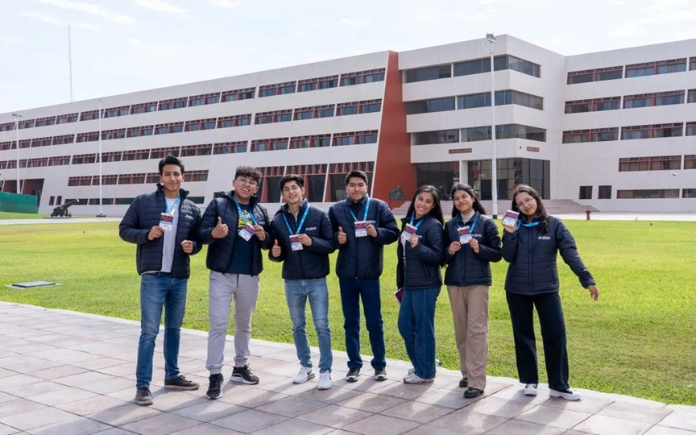
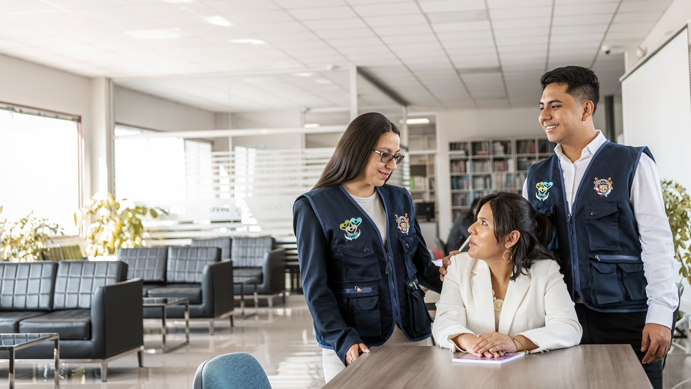
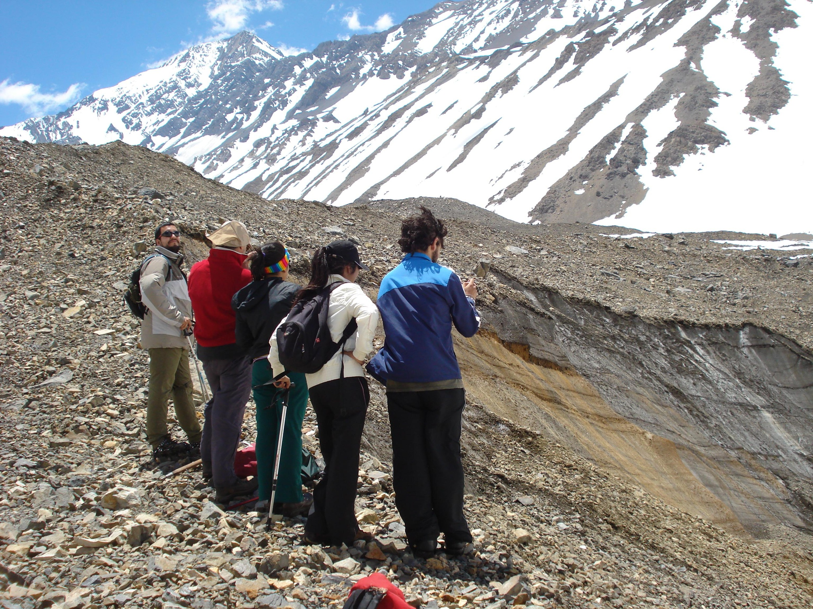

Presentación institucional



Proyección y servicio a la comunidad
Comprometidos con el desarrollo sostenible.
Proceso de admisiónBienvenidos a la Facultad de Ciencias Sociales
Nuestra Facultad tiene como misión formar profesionales competentes, comprometidos con el desarrollo humano, social y cultural del país.
Contamos con docentes calificados, infraestructura moderna y programas que responden a las necesidades actuales de la sociedad.
Nuestras Escuelas Profesionales



